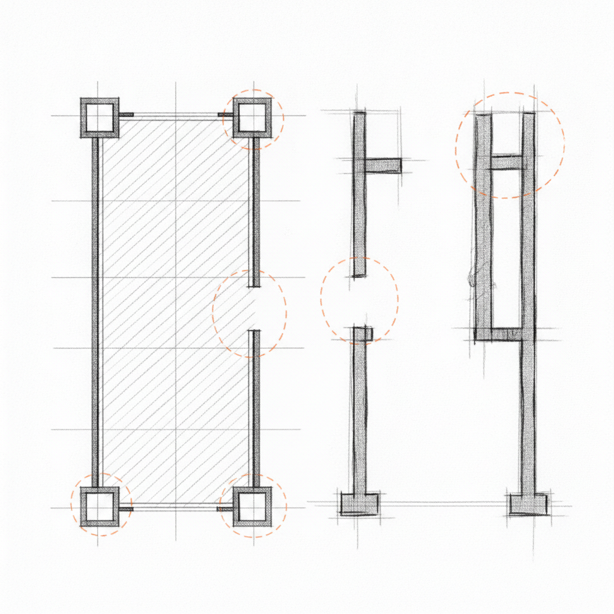

Drafted: 2026-06-20
OS Pillar: Operating Model OS
Quarterly Theme: The Machine
Subject: Sus gerentes están bloqueando su despliegue de IA en silencio
Preheader: La herramienta funciona. El modelo operativo a su alrededor, no.
Resumen del Insight: Las empresas medianas están desplegando herramientas de IA en busca de eficiencia, pero no capturan valor estratégico porque no rediseñaron el modelo operativo que decide cómo fluyen las decisiones y quién responde por los resultados. La tecnología funciona; lo que falla es la máquina alrededor.
Esta semana: la IA no expone una falla de herramientas. Expone qué gerentes nunca corrieron el proceso, solo lo controlaban.
Tres historias esta semana. El consultor de capital privado de Insperity sostiene que la agilidad operativa tras una adquisición depende de una estrategia de capital humano que casi nadie diseña. Grata describe a la IA en M&A como riesgo de credibilidad tanto como ganancia de productividad. Y Fast Company plantea que los empleados junior cargan hoy un saber que los líderes senior necesitan aprender. Sectores distintos, mismo movimiento de fondo: la autoridad ya no reside donde el organigrama indica. El dueño que opera su empresa como si el conocimiento fluyera de arriba hacia abajo está administrando un edificio que ya no existe.
Compró la herramienta de IA. El equipo la usa a medias. La ganancia de productividad que le prometieron no llegó. Los reportes siguen entregándose tarde. Las aprobaciones siguen embotellándose en las mismas personas. El tablero que prometía visibilidad lo actualiza alguien que copia datos de otro sistema y los pega ahí. Usted asume que el despliegue quedó incompleto y agenda otra capacitación.
No es un problema de despliegue. Es un problema de modelo operativo. Y quienes construyeron el modelo operativo que rige hoy son los mismos que, en silencio, se aseguran de que la herramienta nueva no lo altere.
El mecanismo funciona así. La mayoría de los procesos en una mediana empresa no se diseñaron: se fueron acumulando. Un gerente metió un paso porque alguna vez ocurrió un error. Otra agregó una aprobación porque quería visibilidad. Con el tiempo, el proceso se convirtió en un registro de qué gerentes querían estar en qué circuitos. Al desplegar IA sobre ese flujo, la herramienta atiende el trabajo sin dificultad. Lo que no puede atender es la política. El paso donde Marcus revisa el archivo sigue ahí. No porque Marcus aporte criterio. Sino porque su rol está definido, en parte, por ser quien revisa el archivo.
Ahí aparece el diagnóstico que casi todos los dueños pasan por alto. Los gerentes que frenan la adopción no la frenan porque no entiendan la herramienta. La frenan porque entienden con precisión qué es lo que amenaza. El proceso es el foso que rodea su autoridad. Automatice el proceso y el foso desaparece.
El Operating Model OS plantea una pregunta más incómoda que la de productividad. Pregunta tres cosas. Cuáles decisiones del flujo requieren criterio humano. Cuáles requieren responsabilidad humana. Y cuáles "decisiones" son, en realidad, puntos de control que no producen nada. Las dos primeras se conservan. La tercera hay que reasignarla antes de desplegar la herramienta. No después. Antes.
Esto le exige hacer algo que la mayoría de los dueños evita. Mirar a cada gerente con autoridad de aprobación y preguntarse, con honestidad, si esa aprobación aporta valor o lo absorbe. Quienes aportan valor recibirán bien la herramienta, porque los libera de trabajo que nunca fue suyo. Quienes absorben valor la frenarán: levantarán riesgos, insistirán en casos extremos, retrasarán el proyecto en voz baja. Esa resistencia es el diagnóstico. Usted buscaba una señal para localizar el cuello de botella. La señal son ellos.
Esta semana, elija un flujo donde la IA se desplegó y la adopción se atascó. Liste cada paso de aprobación. Por cada uno, pregúntese qué pasaría si lo elimina. Si la respuesta honesta es nada malo, esa aprobación nunca fue autoridad de decisión. Era propiedad de proceso sostenida para proteger un rol. Reasígnela a quien hace el trabajo. Después vuelva a desplegar la herramienta.
BMW Group anunció que su planta de San Luis Potosí producirá dos modelos eléctricos de la plataforma Neue Klasse a partir de 2027, con una inversión cercana a los 2,000 mdd. Lo interesante no es el monto. Es lo que el monto compra.
BMW no está construyendo una operación nueva en México. Está extendiendo un modelo operativo que ya funciona en Múnich, Spartanburg y Shenyang. El criterio de producción está codificado en el sistema, no en la cabeza del director de planta. Un ingeniero recién llegado entrega calidad premium en semanas porque la decisión sobre qué hacer y qué escalar ya la tomó el sistema, no él.
Para el dueño de una empresa mediana mexicana, entre 5 y 100 millones de dólares de facturación, la lectura es directa. La prima de valuación en su próxima salida no vendrá de su cartera de clientes. Vendrá de cuánto de su criterio quedó convertido en un sistema que alguien más pueda operar sin usted en la sala.
RACI Matrix Template (Atlassian) - una plantilla gratuita para identificar quién es Responsable, Aprobador, Consultado e Informado en cada decisión de un flujo. Obliga a sostener la conversación sobre qué aprobaciones existen por valor real y cuáles solo por control, antes de montar cualquier herramienta encima del proceso. Disponible en atlassian.com.
El indicador de la semana: cuente las solicitudes de aprobación que llegan a su bandeja de lunes a viernes. Por cada una, pregúntese si quien la envió pudo haber decidido por su cuenta. Ese conteo es el veredicto de su modelo operativo sobre si el equipo tiene autoridad real o sólo la apariencia. Si supera diez, la herramienta de IA que adquirió este trimestre no va a entregar lo que usted esperaba.
Si algo de este número resonó contigo, respóndeme - leo cada mensaje.
Si le es útil a alguien en tu red, reenvíalo - es el mayor cumplido.
Cuando estés listo para trabajar juntos directamente, así es como empezamos: [link]
Draft generated by the pipeline. Review and edit before sending.